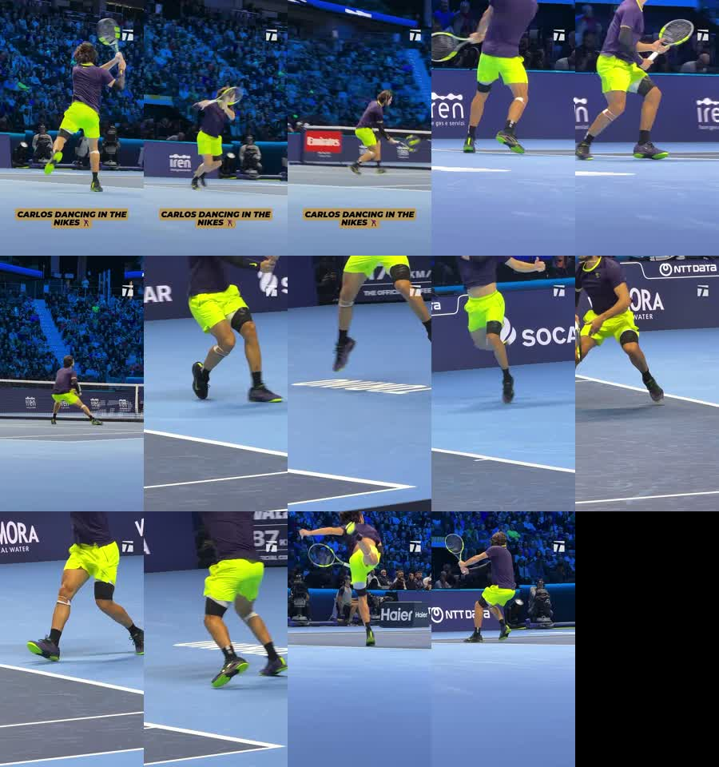
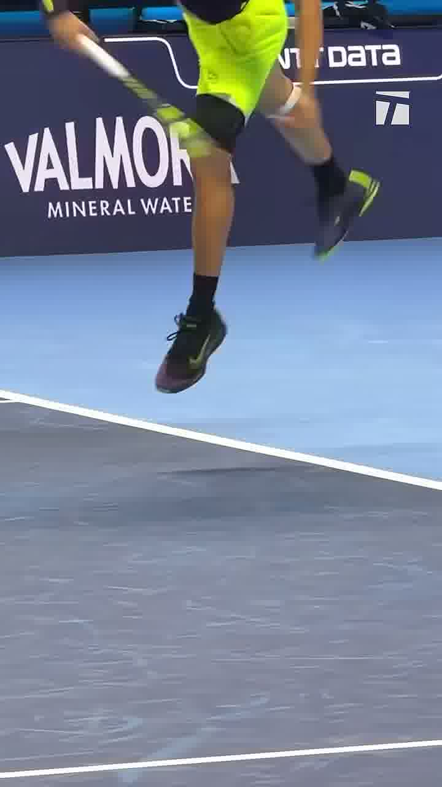
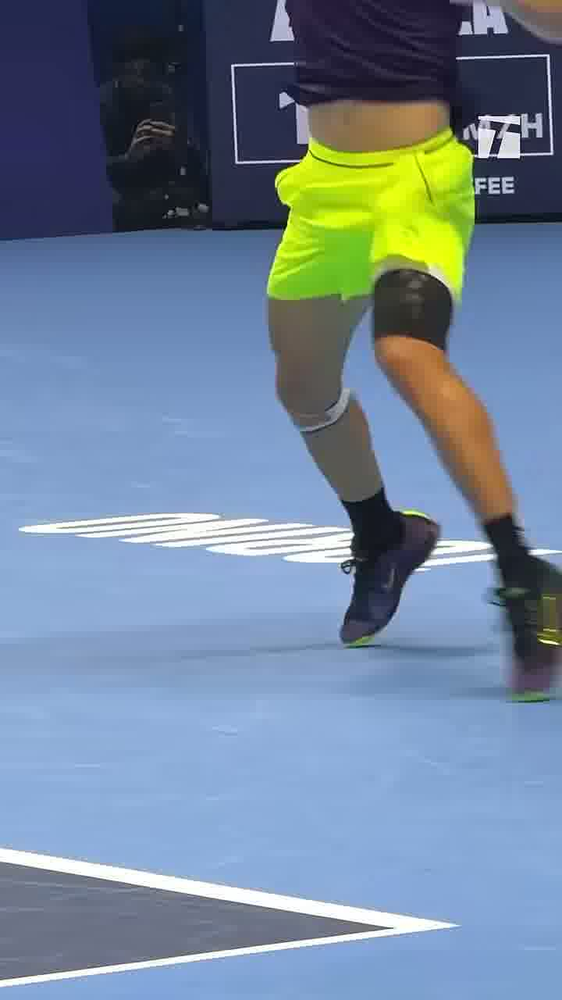

Watch the reel here — original, lower-body crop, slow motion
Downloaded from the Tennis Channel reel: 720×1280, 30 fps, 28.2 seconds. The edit alternates wide rally shots with tight lower-body close-ups — a “dancing feet” cut, not one continuous rally. All three versions play inline and can be downloaded.

7 takeaways — feet only
The split-step is timed to contact — but landed after it
Coaching sources agree Alcaraz starts his split as the ball leaves the opponent's racket. Measured elite returners, though, take off around contact and land 131–160 ms after it, once early ball-flight information exists. The popular cue “land as the opponent hits” is a simplification that conflicts with the measurements if taken literally. [DW Tennis; Navia et al. 2022; Mecheri et al. 2019]
First step: explosive, low, off the outside foot
Every coaching breakdown describes the same picture — hips drop, hard push off the outside foot, no hesitation after the read. But no source identifies his dominant first-step type (gravity, pivot or jab), and the general literature is split by task: gravity wins for reactive wide balls, jab wins short planned sprints. [HoopsKing; DW Tennis; Bragg & Andriacchi 2001; Vuong et al.]
Crossover in defence — not “crabbing”
The most specific Alcaraz source: in backhand-corner defence against approach shots he rotates the hips and steps the outside leg across the body line, where most players side-shuffle with chest to net. Claimed effects: faster to the ball, rotation preserved, balance kept to explode forward after a low slice. The general pattern is crossover out, shuffle back. [Tennis Whisperer; DW Tennis]
Micro adjustment steps buy the contact point
“Rapid adjustment steps… precise small steps ensure he's always perfectly positioned” (DW Tennis); on clay, “one micro adjustment, a half-inch stutter step before contact” gives the racket face time (SportsOrca). All qualitative — no step count for Alcaraz exists in any source found. [DW Tennis; SportsOrca; LetsPlayTennis UK]
The airborne forehand is an outcome, not a jump
On clay and hard courts, wide forehands are hit open-stance with the right leg driving so hard that he leaves the ground as he uncoils, landing on the same right foot; on grass he uses a quieter step-over variant. The lift is a summation of leg drive and rotation — not a deliberate jump. [Hugh Clarke 2025; Robson/Yandell — general mechanism]
Hard court means brake; clay means slide
Biomechanics: on hard courts players brake with greater knee flexion; less flexion facilitates the clay slide. Alcaraz can slide on hard courts — commentators praise it — but no source quantifies how often, and analysts disagree on whether sliding is central to his hard-court system at all. [Damm et al. 2013]
His only hard numbers are distances and return outcomes
Verified match aggregates: 1,884.9 m and 2,325.0 m at the US Open 2026; 3,376.6 m in the Wimbledon 2025 final. Against Zverev's first serve, matched Infosys data has just 34.6% unreturned vs Alcaraz against 44.4% vs the tour. Top speed, acceleration, COD count, split-step timing measured on Alcaraz: do not exist in published sources. [IBM SlamTracker; Infosys via Willis]
Ignore the viral numbers
Social posts credit Alcaraz with a “45 km/h” top speed and a “0.38 s reaction, faster than 92% of the ATP.” Neither has a primary source; 45 km/h is implausible against measured velocity distributions (pros spend 0.3% of match time at 18–24 km/h), and the reaction claim contradicts peer-reviewed timing data. Full list in Could not verify. [Pereira et al. 2016; Navia et al. 2022]
One point, six footwork phases
The reel is an edit, so the phases below follow the movement cycle the coaching sources describe — in phase order, not as a frame-by-frame timeline of this clip. Tap a phase for what the sources say, what the reel shows, and the cue to steal.
| Phase | What happens | Evidence level |
|---|---|---|
| Split-step | Light hop timed to opponent contact; land on the forefoot, wide and low, already reading. | Observed in reel · coaching consensus · peer-reviewed timing |
| First step | Explosive, low push off the outside foot in the direction read during the hop. | Coaching consensus (type not identified for Alcaraz) |
| Travel | Shuffle for 1–3 steps; crossover for 4+ steps and wide balls, hips turned. | Observed in reel (recovery) · coaching consensus |
| Adjustment steps | Rapid micro steps in the last 1–2 m to set distance and contact height. | Coaching consensus (no counts published) |
| Contact | Open-stance forehand; on wide balls the leg drive can lift him off the ground; load the outside foot. | Observed in reel (one airborne frame) · analyst breakdown |
| Recovery | Crossover back toward the bisector of the opponent's angles, flowing straight into the next split. | Observed in reel · coaching consensus |
Vocabulary follows the Kovacs / iTPA movement language (mogul step, front/back crossover recovery, defensive 180° recovery). Beyond “crossover recovery,” applying specific Kovacs labels to Alcaraz would be inference, not sourced fact — so this page doesn't.
Land after contact, when the ball has told you something
The return of serve is the best-measured case in tennis movement science. Three studies, three methods — and one consistent picture: elite returners take off around the server's contact and land roughly 130–160 ms after it, then start moving sideways at ~160–180 ms, once early ball flight can be read. Landing “at” contact, as many coaching cues phrase it, would mean moving before the information exists.
Milliseconds after opponent contact (return of serve)
*Not a contradiction: Filipcic timed a different event — split-step occurrence in 25 fps match video across all stroke types — not first-foot landing at 300 Hz on returns. Mecheri's take-off averaged +9 ms relative to contact (earlier studies: Avilès 2002 −40 ms take-off / +160 ms landing); split duration 142 ms. Nieminen's lab split-step landing was 13.1% faster to target than no split-step; Uzu 2009 found landing ~180 ms after the signal quickest with reliable direction. Time pressure context: roughly 500–600 ms is available against a 200 km/h serve.
What Alcaraz's coaches' cues get right — and simplify
DW Tennis: he “initiates his split step exactly as the ball leaves his opponent's racket.” Essential Tennis (Ian Westermann) breaks it into three steps — lift before contact, read in the air, pivot the outside foot on landing — and notes Alcaraz sometimes changes direction mid-air, planting one foot and pivoting the other. The initiation cue matches the measured take-off (~contact); the landing happens after, by design.
Stiffer legs, later step — on purpose
Mecheri et al. found leg stiffness rises with expertise, and in world-class males (n=10) stiffness correlated with initial foot-movement timing at r² = 0.54: stiffer players step later, maximising information time. Anticipatory sideways movement before the opponent's stroke occurred in only 6–13% of match situations (Triolet et al. 2013). Elite movement is mostly patience, then violence.
| Study | Sample / method | Key numbers |
|---|---|---|
| Navia et al. 2022, J Sports Sci 40(1) | 12 male experts (ITN 1–2, incl. 6 ATP), hard court, 300 Hz, 600 trials | Landings 133 ms after server contact (abstract); first foot 131 ms, second foot 156 ms; lateral initiation ~177 ms, no response errors when after contact |
| Mecheri et al. 2019, J Sports Sci 37(17) | 22 world-class players returning same-level serves, hard court; leg-stiffness experiment | Take-off +9 ms, landing +152 ms vs contact; split duration 142 ms; stiffness–timing r² = 0.54 in world-class males |
| Filipcic et al. 2017, J Hum Kinet | 28 players (7 ATP men), 15 matches, 25 Hz video, 8,545 strokes | “Response time” 0.300 s (1st serve), 0.334 s (2nd serve); ATP total 0.306 s; volleys shortest (FH 0.242 s); each player has their own timing |
Gravity, pivot or jab? The honest answer: it depends on the task
Three first steps are taught. Jab — step first with the near (lead) foot toward the ball. Pivot — pivot on the lead foot, turn the hips, step with the opposite leg. Gravity / drop — draw the lead foot inward so the centre of mass falls outside the base of support and gravity starts the move. Two research lines point in opposite directions — because they test different tasks.
Bragg & Andriacchi 2001 (Stanford) — reactive wide balls, ball machine, 10 club players
Controlled returns: gravity 40% vs jab 20%. Motion-lab timing (n=1): centre of mass outside the base at ~0.15 s (gravity) vs ~0.3 s (pivot) vs ~0.5 s (jab). From the baseline the step hardly mattered (96/100 controlled) — the differences appeared on quick-start balls. Authors' own limits: players self-selected their step, all were pre-coached in the gravity step, “in control” was judged ad hoc. A strong hint for wide reactive balls — not proof.
Vuong et al. — the counter-result
22 male competitive athletes, planned lateral sprints (direction known in advance, no reaction component): no significant difference at 25 cm; at 50 and 100 cm the jab was faster than gravity; over 5 m, counter-steps beat both gravity and pivot in both directions. Different task, different winner.
No label exists — and none should be invented
Coaching sources describe Alcaraz's first step only as explosive and low, pushing off the outside foot (HoopsKing, DW Tennis); LetsPlayTennis UK calls his acceleration from a standstill “among the best on tour” — qualitative. Essential Tennis's “pivot the outside foot on landing” echoes Kovacs's pivot language but is never labelled or counted. Anyone who tells you Alcaraz is “a gravity-step player” is guessing.
Try the coaching rule: distance picks the pattern
Rule as taught by Play-Rally and LetsPlayTennis: shuffle for 1–3 steps (stay facing the net), crossover for 4+ steps and wide balls, then transition back to shuffle / adjustment steps for the last 2–3 steps before contact, loading the outside foot on arrival. Coaching consensus — not a measured law.
How much movement is a point, really?
Two famous numbers seem to contradict each other — 1.6 vs 3–7 changes of direction per point. Both are correct under their definitions: Giles counts only medium/high-intensity CODs detected by a velocity/angle algorithm in Hawk-Eye data; Kovacs-era counts include every directional change, small adjustment and recovery steps included. Always ask which definition a number uses.
CODs per point — Giles, Peeling & Reid 2024: 182 Australian Open matches, Hawk-Eye, >120,000 CODs. 4.8 m per COD; 1.3–1.4 shots per COD; men change direction every 2.7 s (women 3.1 s); ~2 in 3 CODs exceed 105°; high-intensity CODs: men 1 every 5 points.
Direction changes per point — Kovacs classic reviews (2006–2009), counting all changes. Points average ~6 s, most under 10 s; work-to-rest 1:2 to 1:5; players rarely run more than 30 yards in one direction. Other reviews cite 4–6 per player per point.
Per match (± 880 m) — Pereira et al. 2016, 8 pros in Futures matches on outdoor clay, automatic tracking. Per rally: median 5.2 m serving vs 6.2 m returning; ~5.5 m overall; >75% of movement lateral; 79% of time at 0–7 km/h, only 0.3% at 18–24 km/h.
The shape of tennis movement
- 70% lateral, 20% forward, <10% backward (Weber et al. 2006; Kovacs 2009)
- Typical running lengths: 3–4 m
- Split steps were the initial movement in 66.59% of cases (Hughes & Meyers 2005, Wimbledon 2002)
- Recovery: side steps 42.01% of recoveries in the same study
- Shuffle covers ~30% less distance than reverse crossover (Nadal case study, iTPA) — a Nadal data point, not Alcaraz
Why Alcaraz's per-point distances look bigger
Grand Slam tracking (IBM/Hawk-Eye) counts all movement during the point — recovery, repositioning, between-shot drift — over longer rallies at a higher level. Pereira's ~5–6 m is a rally median from Futures clay with different inclusion rules. Comparing the two directly, or averaging Alcaraz's matches into one number, mixes definitions. Next section keeps them separate.
The numbers that actually exist for Alcaraz
No biomechanics lab has published on him. What exists is match-aggregate tracking — distance covered — and return outcomes derived from Infosys Court Vision by analyst Matthew Willis. That is the entire Alcaraz-specific quantitative record found.
| Match | Alcaraz distance | Per point | Opponent | Source |
|---|---|---|---|---|
| US Open 2026 R1 vs Safiullin (6-4 6-4 6-4, 2:22) | 1,884.9 m | 9.9 m/pt | Safiullin 1,820.9 m · 9.6 m/pt | IBM SlamTracker (primary) |
| US Open 2026 R4 vs Paul (6-4 6-3 6-4, 2:21) | 2,325.0 m | 13.4 m/pt | Paul 2,332.8 m · 13.5 m/pt | IBM SlamTracker (primary) |
| Wimbledon 2025 final vs Sinner (4 sets, >3 h) | 3,376.6 m | 14.2 m/pt | Sinner 3,330.4 m · 14.0 m/pt | UIS Journal, reporting official final data (secondary) |
Per-point distance swings from 9.9 to 14.2 m depending on opponent, surface and rally length — it is a match property, not a fixed Alcaraz trait. Do not average these into “Alcaraz covers X metres.”
The return numbers: where the footwork shows up in data
Zverev first serves across 7 hard-court meetings (2023–2026), 483 serves matched on direction, speed (±3 mph), depth (±30 cm) and placement (±5 cm): unreturned 34.6% vs Alcaraz vs 44.4% vs the tour. Within 25 cm of a line, Alcaraz got 40.0% back vs the field's 20.3% — nearly double; the edge largely disappears beyond 75 cm (24.0% vs 21.9%). At the ATP Finals 2026 final, Zverev's unreturned rate fell from 57% in earlier rounds to 26% against Alcaraz. Reported by Tennis Tonic and Last Word on Sports (Nov 2026); the primary Infosys dataset is not public.
Serve-plus-one conversion — context, not footwork
On hard courts 2024–2026 (Willis via Second Serve Aces), short returns (>5.1 m from baseline) were converted at Alcaraz 50%, Sinner 51%, Zverev 43%, Medvedev 37%; medium returns: Alcaraz 31%, Sinner 31%. This measures tactical conversion after the return — relevant to forward movement and recovery, but it is not a speed or footwork metric, and this page doesn't treat it as one.
On hard courts the knee bends to brake — the slide is a clay tool
Damm et al. 2013 put 8 players on force plates with 3D kinematics, hitting side jumps and running forehands on clay (low friction) and cushioned acrylic hard court (high friction). The surfaces demand opposite strategies — and the reel above is on the high-friction one.
Knee flexion at impact, clay vs hard (± 10.2°) in the running forehand — the knee is less flexed on clay. At peak flexion the gap grows to −13.1° (± 12.0°).
Clay traction coefficient, vs 0.8–1.2 for other surfaces (Nigg 2003, via Clarke et al. 2012). Peak utilised friction was greater on clay — players exploit what the surface offers, differently on each.
The hard-court default. Damm's conclusion: “Less knee flexion facilitates sliding on clay, whereas greater knee flexion contributes to braking on the hard court.” Hard-court sliding is physically possible, but shoe research (Monnet et al.) shows the same slide length needs a higher approach velocity — it is mechanically costly, a situational defence, not a default.
Alcaraz on clay: the slide-brake
SportsOrca's narrative account of his Parisian clay footwork: the outside foot bites the dirt, the knee bends, the hip stays loaded through the slide, the chest avoids turning fully away — brake on the outside leg, hit open-stance, explode forward without a full reset. Consistent with Damm's clay mechanics, but SportsOrca provides no measurements.
Alcaraz on hard courts: celebrated, but how central?
Broadcast commentary from the Australian Open 2025 praised a full-length sliding dive on hard court as “a skill learned on clay.” Forum analysis (Talk Tennis, low authority) argues the opposite emphasis: for Djokovic and Sinner hard-court sliding is foundational, while Alcaraz “can slide on hard court for the nonce, but it isn't a foundational feature of his system.” No quantitative source resolves this — no slide frequency or distance for Alcaraz exists on any surface.
The airborne forehand: lift is a result, not a technique
What Hugh Clarke saw at Queen's (2025)
Recapping the Queen's final (23 Jun 2025): on clay and hard courts, Alcaraz's wide forehands are often open-stance, where “the right leg is pushed on with such force that they jump as they uncoil to create angular momentum, landing on the same right foot first.” On grass he switches to a final step-over — quieter upper body, better balanced recovery. Same player, surface-specific feet.
Mouratoglou's “never happened before”
Patrick Mouratoglou observed that Alcaraz starts one forehand pattern “really on the back leg, body weight leaning backwards,” yet transfers forward to finish inside the baseline, where “99.9% of players would finish moving back.” Striking — but it is expert opinion on a single clip, not biomechanics, and is labelled that way here.
Why players leave the ground at all
John Yandell and Eli Ellenbecker (via Douglas Robson, using Nadal/Murray examples — not Alcaraz): the lift is “not so much a jump as a summation of lower- and upper-body forces”; rotation sends the player airborne, they land on the same leg and push off into the next split-step. Kovacs/iTPA call the pattern “Forward Hit & Hop”: the body travels forward through the air because of the power produced, back leg kicking up behind. Use this to explain Alcaraz's air time — not as measurements of it.

Train the loop, not the ladder
Reputable coaching sources converge on training the whole cycle — split → first step → adjustment → hit → recovery → split — rather than isolated ladder speed. Dosages are as published by each source. Honest evidence note: footwork RCTs are few and small (Uzu's lab study n=10; Bragg n=10), and no source validates a specific drill programme for 3.0–5.0 players with controlled outcomes — treat these as practice recommendations mapped to the benchmarks above, not proven interventions.
Dosage guardrails (across sources)
- Warm up first; keep efforts under ~8–10 s — points average ~6 s, with work-to-rest of 1:2 to 1:5.
- Stop the rep when balance or recovery quality degrades — sloppy reps train sloppy feet.
- Split-step on every ball: baseline, return and net play alike.
- Recover to the bisector of the opponent's possible angles, not always to the centre mark.
What not to copy from Alcaraz
- Don't drill the airborne forehand as a jump.Sources agree the lift is the result of leg drive plus rotation. Deliberately jumping at the ball costs club players stability and power.
- Don't make hard-court sliding a default.Damm et al.: hard courts reward braking with knee flexion. Deliberate sliding on a high-friction surface raises sticking and injury risk.
- Don't guess direction before contact.Elite data shows players wait for early ball flight — pre-contact sideways movement appears in only 6–13% of situations, and an early sideways split increases wrong-direction errors (Navia et al.).
What to look for in the frames — and the limits of a highlight reel
Three frames from the 1 fps extraction, matched to the patterns the coaching sources describe. These are observations from the frame notes — the reel's cuts and mixed angles mean nothing here is a measurement.



What the frames do show
- Constant split-step bounce on the forefoot between shots
- Wide, low base when stretched
- Crossover steps on recovery
- One airborne forehand
- Heels clearly off the ground mid-movement in several frames
- Black knee support/tape on the left knee in several frames
What they cannot show
- Step counts or timings — the edit cuts between rallies and angles
- Split-step timing — most frames have no opponent-contact reference
- Forces, stiffness, jump height or slide distance — no instrumented data exists in a broadcast clip
- Whether any pattern is typical — a 28-second highlight is a selection, not a sample
Could not verify
Searched for and not found, or found only in unsourced form. These stay open — nothing on this page depends on them.
- Any Alcaraz-specific biomechanics at all: split-step timing or height, leg stiffness, ground-reaction force, first-step type frequency, adjustment-step counts, recovery-step frequencies, airborne height or air time, slide distance/frequency/velocity on any surface. No source found — the Alcaraz sections of this page are qualitative coaching observation.
- Alcaraz top speed, acceleration or COD count from ATP, Infosys, Hawk-Eye, Wimbledon or the US Open. Only distance aggregates and return / serve-plus-one outcomes are published.
- “Covers 1.5 m more per point than the tour average; reaction 0.38 s, faster than 92% of the ATP” (LetsPlayTennis UK) — no primary citation, dataset or date; could not be corroborated, and the reaction claim conflicts with peer-reviewed data.
- “430–470 ms reaction, 40% reduction when timed perfectly” (Fabian Donsbach social reel) — no cited study could be verified. These numbers measure different events (or none) versus Navia's 177 ms lateral initiation; none is Alcaraz-measured, so they are never charted together.
- “45 km/h” top speed (Facebook highlight graphic) — social only, no method; implausible against Pereira's velocity distribution (0.3% of match time at 18–24 km/h) and court dimensions.
- The primary Infosys Court Vision dataset behind the Willis return and serve-plus-one numbers — secondary reporting is consistent, but raw data and methods beyond the matching criteria are not publicly accessible.
- Wimbledon 2025 final distances from a primary Wimbledon sheet — relied on secondary reporting of official data. The US Open figures were verified on primary IBM SlamTracker pages.
- Drill efficacy for 3.0–5.0 NTRP specifically — no RCTs found; the drills are expert consensus plus small lab studies in collegiate/club samples.
Everything cited, with links
Research read 27 Nov 2026. Peer-reviewed papers first, then Alcaraz coaching analysis, tracking data, and benchmark/drill sources.
Primary / peer-reviewed
- Mecheri et al. 2019, J Sports Sci — pure.port.ac.uk (PDF)
- Navia et al. 2022, J Sports Sci — pure.port.ac.uk (PDF)
- Filipcic et al. 2017, J Hum Kinet — PMC5304278
- Damm et al. 2013, Sports Biomechanics — PubMed 24466651
- Giles, Peeling & Reid 2024, J Strength Cond Res — PubMed 38320234
- Pereira et al. 2016, J Sports Sci — ResearchGate
- Kovacs / iTPA Movement & Footwork Language — tenniskb.github.io (PDF)
Alcaraz coaching / analysis
- DW Tennis — footwork lessons from Alcaraz, Federer & Sinner — dwtennis.sg
- Tennis Whisperer — the science behind turning defence into attack — tenniswhisperer.com
- Essential Tennis — how to move like the pros (Djokovic, Alcaraz) — essentialtennis.com
- Hugh Clarke — Alcaraz vs Lehecka, Queen's final recap — hughclarke.substack.com
- HoopsKing — move faster like Carlos Alcaraz — hoopsking.com
- SportsOrca — Alcaraz's Parisian clay footwork — sportsorca.com
- Mouratoglou via The Tennis Gazette — the forehand nobody has done before — thetennisgazette.com
- Robson — the airborne groundstroke (general mechanism) — douglasrobson.com
Tracking data
- US Open IBM SlamTracker — Alcaraz vs Paul (match 1408) — usopen.org
- US Open IBM SlamTracker — Alcaraz vs Safiullin (match 1164) — usopen.org
- UIS Journal — Wimbledon 2025 final technical analysis — uisjournal.com
- Tennis Tonic — Alcaraz neutralises Zverev's serve (Willis / Infosys) — tennistonic.com
- Last Word on Sports — how Alcaraz neutralised Zverev — lastwordonsports.com
- Second Serve Aces — serve-plus-one tactical analysis — secondserveaces.com
- Source reel — Tennis Channel, Facebook — facebook.com/reel/1087874634298510
Benchmarks & drills (secondary)
- MyTennis — the first step (Bragg & Andriacchi summary) — mytennis.uk
- Dominating Tennis — first step (Vuong et al. summary) — dominatingtennis.com
- SimpliFaster — agility & change of direction (Pereira summary) — simplifaster.com
- LetsPlayTennis — footwork basics: split-step & recovery — letsplaytennis.com
- Play-Rally — tennis footwork movement patterns — play-rally.com
- LetsPlayTennis UK — Alcaraz speed & anticipation (contains claims flagged as unverified on this page) — letsplaytennis.co.uk